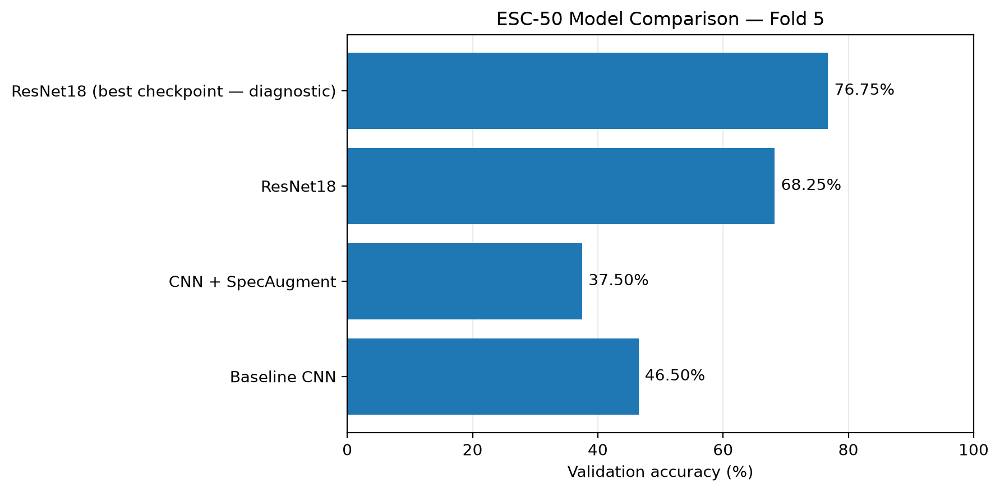
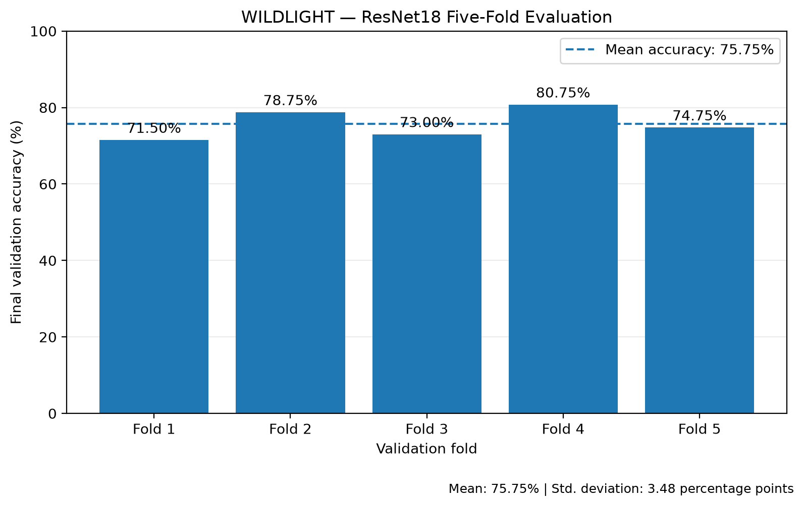

RQ 01
Representation learning from scratch
Can a standard convolutional neural network (CNN) trained from scratch learn useful acoustic representations directly from 2D mel spectrograms without pre-training?
WILDLIGHT explores environmental sound classification through CNN baselines, spectrogram augmentation, and transfer learning—evaluated on ESC-50 with an official five-fold validation study.
Environmental audio classification requires learning invariant spectral-temporal signatures from limited data. WILDLIGHT systematically addresses four empirical questions:
Can a standard convolutional neural network (CNN) trained from scratch learn useful acoustic representations directly from 2D mel spectrograms without pre-training?
Does SpecAugment (frequency and time masking) during training improve model generalization to unseen environmental sound recordings?
Does an ImageNet-pretrained ResNet18 adapted for single-channel mel spectrograms significantly outperform the custom CNN trained from scratch?
How consistent is ResNet18's classification accuracy across all five official ESC-50 validation folds when holding out each fold once?
Audio classification bridges digital signal processing and visual computer vision. Training and inference share a single standardized preprocessing pipeline.
Transforms raw time-domain waveforms into normalized 2D acoustic representations
Respects official ESC-50 recording partitions to avoid acoustic leakage
3 convolutional blocks (1→32→64→128 channels) with BatchNorm, ReLU activations, and MaxPool2d. Global average pooling feeds a linear classification layer with 50 outputs. Trained from scratch.
Identical 3-block CNN architecture. Augments spectrograms during training using FrequencyMasking(freq_mask_param=15) and TimeMasking(time_mask_param=30). Validation data is kept unaugmented.
Standard torchvision.models.resnet18 with ImageNet-pretrained weights. First conv1 layer is adapted from 3 input channels to 1 by summing RGB weights. Final linear layer adapted to 50 classes.
Evaluating checkpoints on the official held-out Fold 5 reveals a significant +21.75 percentage point gain for the adapted ResNet18 over the CNN trained from scratch.
| Model / Approach | Checkpoint File | Correct | Accuracy |
|---|---|---|---|
|
Baseline CNN
Trained from scratch · 30 epochs
|
esc50_cnn.pth |
186 / 400 | 46.50% |
|
CNN + SpecAugment
Frequency & time masking · Final epoch
|
esc50_cnn_specaugment.pth |
150 / 400 | 37.50% |
|
ResNet18 (Final Checkpoint)
Primary single-split benchmark · Fine-tuned
|
esc50_resnet18_last.pth |
273 / 400 | 68.25% |
|
ResNet18 (Best Checkpoint)
Diagnostic only · Validation-selected
|
esc50_resnet18_best.pth |
307 / 400 | 76.75%* |
Transfer learning from visual domain priors provides immediate feature extraction benefits for acoustic spectrograms, even with simple 1-channel weight aggregation.

compare_models.py. The final ResNet18 checkpoint achieves 68.25%, outperforming the CNN baseline by 21.75 percentage points.
The 76.75% score achieved by esc50_resnet18_best.pth was selected using validation performance on the very same Fold 5. Because the selection criterion was coupled to the test split, this measurement is prone to optimistic selection bias. The 68.25% final-epoch checkpoint is the unbiased primary single-split benchmark.
During training, CNN + SpecAugment reached a peak observed accuracy of 51.00% at epoch 23 (24th epoch). However, the training script saved only the final epoch weights, which degraded to 37.50%. We report the actual saved checkpoint and do not claim that SpecAugment outperformed the baseline in this run.
Holding out each official fold once provides an unbiased statistical view of model stability across heterogeneous environmental sound categories.
| Validation Fold | Training Folds | Final Accuracy | Best Observed | Best Epoch |
|---|---|---|---|---|
| Fold 1 | 2, 3, 4, 5 (1,600 clips) | 71.50% | 77.25% | Epoch 28 |
| Fold 2 | 1, 3, 4, 5 (1,600 clips) | 78.75% | 82.00% | Epoch 25 |
| Fold 3 | 1, 2, 4, 5 (1,600 clips) | 73.00% | 77.50% | Epoch 10 |
| Fold 4 | 1, 2, 3, 5 (1,600 clips) | 80.75% | 85.00% | Epoch 22 |
| Fold 5 | 1, 2, 3, 4 (1,600 clips) | 74.75% | 74.75% | Epoch 30 |
| Mean Aggregate (Final Accuracies) | 75.75% | Population SD: 3.48 pts | ||
Notice that Fold 5 appears twice in this report with different values:
These numbers originate from independent training workflows with different initializations. They are complementary findings, not contradictions.

Machine learning research is only as good as its reproducibility. WILDLIGHT couples experimental code with modular inference pipelines and a local interactive testing suite.
Centralizes audio loading and shared preprocessing. Ensures training routines and downstream inference use identical windowing, STFT parameters, and normalization logic.
Provides direct command-line inference on any external audio file. Automatically applies the shared preprocessing transform and returns the top 5 predicted ESC-50 categories.
python predict.py "ESC-50/audio/1-100032-A-0.wav"Launches an interactive Gradio web application for local audio file testing, drag-and-drop recording inspection, and real-time category probability ranking.
python app.py # Serves at http://127.0.0.1:7860The Gradio interface and prediction scripts run locally on your machine with PyTorch and the ESC-50 dataset. This showcase website is a lightweight, purely static research report hosted on Vercel—it intentionally does not host live inference backends, GPU instances, or audio upload storage.
Transparent science requires clearly stating experimental boundaries. These findings demonstrate specific architectural behaviors on ESC-50 rather than universal claims.
All results are measured on ESC-50 (2,000 environmental sound clips across 50 classes). While the official fold splits mitigate recording contamination, these metrics do not guarantee identical generalization across noisy real-world recordings, variable acoustic sensors, or disparate audio domains (e.g. AudioSet).
The diagnostic Fold-5 result of 76.75% was achieved by selecting the highest-scoring checkpoint evaluated on Fold 5. Evaluating a model on the same fold used to pick its weights produces optimistic bias. Only the final-epoch weights (68.25% on single-split, 75.75% mean on cross-validation) should be cited as unbiased benchmarks.
While SpecAugment reached a peak validation accuracy of 51.00% at epoch 23, the training script saved only final-epoch weights (37.50%). This demonstrates that data augmentation can induce late-training instability, highlighting the critical importance of automated validation checkpointing in audio ML pipelines.
The output scores returned by predict.py and app.py represent standard softmax normalized logits. They indicate relative model confidence across the 50 classes, not true calibrated Bayesian posterior probabilities. High confidence on ambiguous acoustic inputs does not imply certainty.
The experiments, training logs, evaluation scripts, cross-validation data, and inference pipelines are fully documented in the GitHub repository.